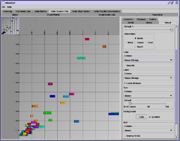
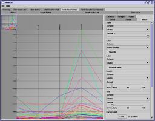
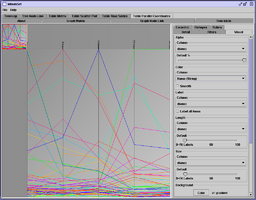
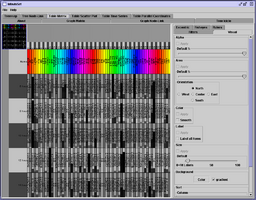
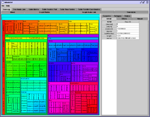
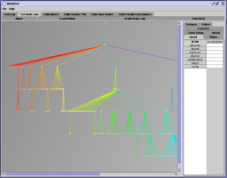
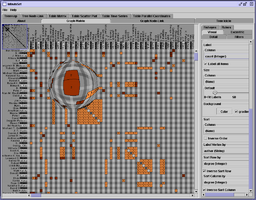

|  |  |  |  |
|  |  |

|
|

|
 |
The InfoVis Toolkit is a Interactive Graphics Toolkit written in Java to ease the development of Information Visualization applications and components.
The main characteristics of the InfoVis Toolkit are:
The InfoVis Toolkit, as of version 0.9, implements nine (9) types of visualization: Scatter Plots, Time Series, Parallel Coordinates and Matrices for tables; Node-Link diagrams, Icicle trees and Treemaps for trees; Adjacency Matrices and Node-Link diagrams for graphs. Node-Link visualizations provides several variants (8 for graphs and 4 for trees).
The framework has been designed to support this versatility so, if you see a problem or improvements when trying to implement your own visualizations, let me know so that I can improve the Toolkit.
Jean-Daniel Fekete, The InfoVis Toolkit, in Proceedings of the 10th IEEE Symposium on Information Visualization (InfoVis'04), IEEE Press, 2004, pp. 167-174.
Jean-Daniel Fekete, The InfoVis Toolkit, Research Report RR-4818, INRIA Futurs, May 2003.
The InfoVis Toolkit is available at http://ivtk.sourceforge.net. The project is at http://sourceforge.net/projects/ivtk/. The latest version is 0.9alpha.
The previous versions are available on sourceforge at http://sourceforge.net/project/showfiles.php?group_id=117801.
Versions before 0.7 are available in
binary format in
infovis-0.6alpha1-compiled.zip or in source format in
infovis-0.6alpha1.zip.
binary format in
infovis-0.5beta2-compiled.zip or in source format in
infovis-0.5beta2.zip.
For information or bug report, send mail to infovis.toolkit@inria.fr.
You can look at the the javadoc pages here or read the preliminary version of the manual.
Other toolkits related to Information Visualization:
For network visualization or graph layout:
Many people contributed to the improvement of the Infovis Toolkit:
{kind=link}
{kind=link}
{kind=link}
{kind=link}
{kind=link}
{kind=link}
{kind=link}